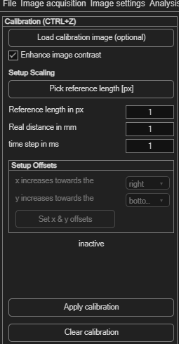
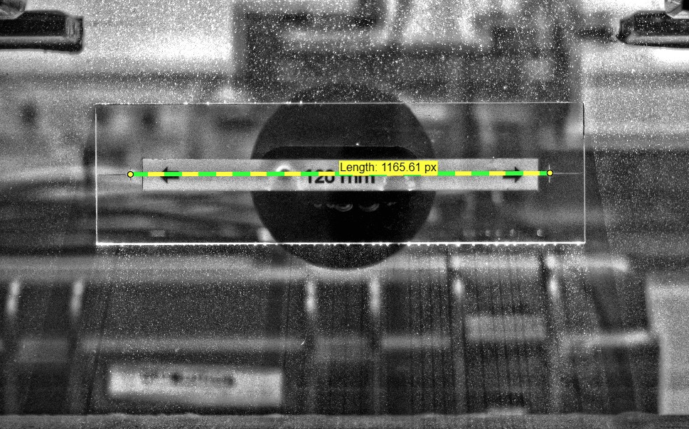

Spatial calibration (px → mm)
This converts your results from pixels and frames into physical units — millimeters and seconds (or velocities). It's independent of camera calibration & rectification, which instead corrects lens distortion and image alignment.
Open via the top-level Spatial calibration (px → mm) menu, or Ctrl+Z.

Optional: a dedicated calibration image
If you photographed a ruler or a target with known dimensions separately from your PIV images, click Load calibration image (optional) to calibrate against that instead of your PIV data. Enhance image contrast (on by default) makes the reference markings easier to see.
Setting the scale
- Click Pick reference length [px] and drag a line across a distance you know the real-world size of (a ruler, a known gap, etc.) — or type the pixel length directly into Reference length in px.
- Enter that distance's real-world size in Real distance in mm.
- Enter the time between your two images in time step in ms.

0 for the time step tells PIVlab you want raw
displacements instead of velocities — useful when the time between
frames isn't meaningful or known.
Setting up axis directions and origin
By default, image data has its origin at the top left, with x increasing right and y increasing downward. The Setup Offsets panel lets you match PIVlab's coordinate system to your own:
| Control | Effect |
|---|---|
| x increases towards the (right/left) | Flips the direction of positive x. |
| y increases towards the (bottom/top) | Flips the direction of positive y — e.g. choose "top" for a conventional bottom-left-origin coordinate system. |
| Set x & y offsets | Click a point in the calibration image and enter the physical (x, y) coordinate it represents, moving the origin there. |
Applying the calibration
Once everything is set, click Apply calibration to convert the whole session's results — not just the current frame. Click Clear calibration to revert to raw pixels/frames.